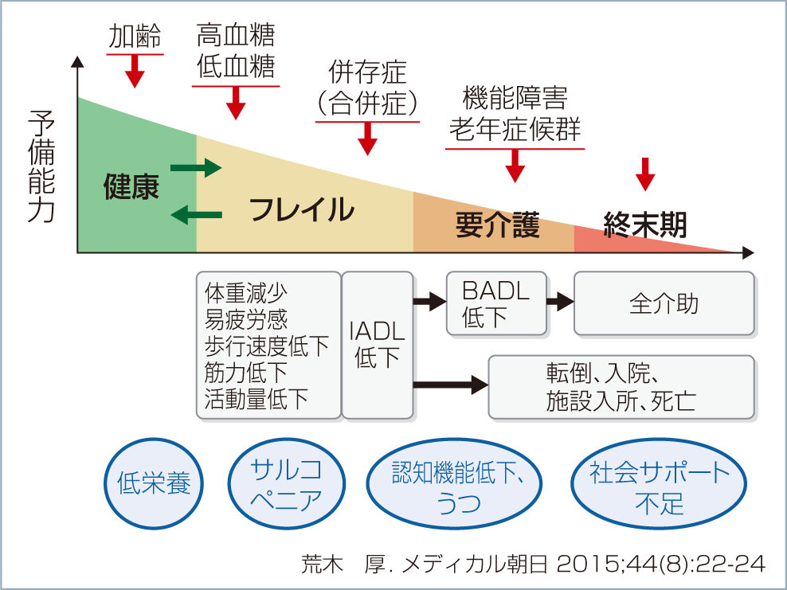

Lilly Diabetesコーナーでは、糖尿病療養支援の参考に資するために<シリーズ・高齢糖尿病患者への新たな視点>を4回にわたりお届けします。超高齢社会においては身体機能、認知機能、生活機能に大きな個人差がみられます。こうした高齢者特有の特徴を、各専門の先生方に解説いただきます。高齢糖尿病患者の療養支援にご活用ください。
シリーズ①
高齢糖尿病患者への新たな視点早期に発見・対応が必須の「フレイル」
身心の脆弱性が亢進した状態が“フレイル”
監修:荒木 厚 先生
東京都健康長寿医療センター
糖尿病・代謝・内分泌内科 総括部長
「フレイル」は、日本老年医学会が2014年5月に、“Frailty(虚弱さ)”に対する概念として定めた呼称です。
フレイルを「高齢期に生理的予備能が低下することでストレスに対する脆弱性が亢進し、生活機能障害、要介護状態、死亡などの転帰に陥りやすい状態で、筋力の低下により動作の俊敏性が失われて転倒しやすくなるような身体的問題のみならず、認知機能障害やうつなどの精神・心理的問題、独居や経済的困窮などの社会的問題を含む」概念であると定義し、医療介護に携わる専門職の方々に予防への取り組みを呼びかけています。
フレイルには、狭義と広義の評価があります。狭義の評価ではFried1)の提唱により、①体重の減少、②易疲労感、③活動量低下、④筋力低下、⑤歩行速度低下、の5項目が用いられ、該当するのが3項目以上の場合はフレイル、1〜2項目の場合はプレフレイルと呼んでいます。
広義の評価では、①VeryFit(元気で活発で活力にあふれる)、②Wel(l病気の症状がなく、しばしば運動する)、③Managing Wel(l病気は治療で落ち着いているが、通常歩行以上には活発ではない)、④Vulnerable(日常生活に支援は必要ないが、疲れやすく歩行速度が遅くなった)、⑤Mildly Frail(IADL(外出・買い物・調理など)の障害)、⑥Moderately Frai(lBADL(入浴など)の障害、外や家の活動に介助を要する)、⑦Severely Frai(l原因が何であれ完全に介助を要する)⑧Very Severely Frai(l完全に介助を要し終末期に近い)、⑨TerminallyIl(l終末期平均余命6ヵ月以内)の9段階に分類されています。
身心の脆弱性が亢進した状態が“フレイル”
糖尿病とフレイルは密接に関係しており(図)、高齢糖尿病患者さんの治療ではフレイルを考慮することがとても大切です。
その理由の一つは、糖尿病患者は、糖尿病のない人に比べフレイルになりやすいことです。糖尿病性神経障害や血管合併症は日常活動を低下させ、脂肪浸潤の増加による筋肉量低下、筋肉の質低下も重なって、筋力低下、歩行速度低下を進めます。高血糖や低血糖もフレイルを進める要因の一つです。また最近は低血糖が認知症の発症・進展を促進することもわかってきており、これもフレイルを進行させる要因となります。
二つ目は、フレイルのある糖尿病患者は生命予後も悪くなることです。フレイルを合併した糖尿病患者の余命は23ヵ月と、かなり短くなるという報告もあります。
三つ目は、フレイルのある患者さんの糖尿病治療では、フレイルのない患者さんとは異なる配慮が必要となる点です。運動指導ではフレイルを進行させないために有酸素運動はもちろん、筋力トレーニングにより筋力の量と質を上げる運動を行うことが大切となります。これはフレイルがない高齢患者さんにとってもフレイルを予防するためにも有効です
また、転倒はフレイルを悪化させるため、転倒予防のために筋力・バランストレーニングを取り入れたり、環境因子の調整を行う必要もあります。
さらに、食事では十分なエネルギーと蛋白質をとり、体重が減らないようにすることも大切です。体重減少があるときには原因をよく探り、適切な栄養サポートを行わなければなりません。
薬物療法では低血糖によってフレイルを悪化させないことが大切です。フレイルを合併した患者さんは重症低血糖を起こしやすく重症低血糖はフレイルや認知症を進行させます。高齢者は低血糖になっても典型的な症状が乏しく、頭がくらくらする、体がふらつく、脱力感といった非典型的な症状を呈します。これを見逃さないように患者さんや介護者への指導を十分に行うことが大切です。また血糖コントロール目標を柔軟に設定し、慎重に薬剤を選択して治療を行うことも必要となります。
フレイル状態を早期に発見し、早期に対応すれば、要介護状態に至る可能性を減らしたり、フレイル状態から脱することができます。そのためには、CDEの皆さんにフレイルについてよく知っていただき、フレイルを早期に発見していただくことがとても重要となります。
1)Fried,L,P.,Tangen,C.M.et al.: J Gerontol A Biol Sci Med Sci, 56:M146 〜 M156,2001.
高齢者糖尿病とフレイル

